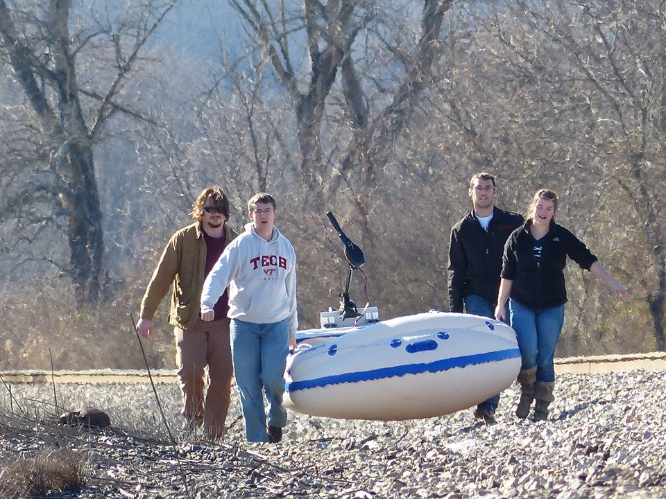

The research will consist of constructing a Universal Autonomous Conversion Kit for small-scale electric outboard motor vehicles. The kit will contain a number of motors, sensors, actuators, and electronic speed controllers, and will be capable of controlling numerous aquatic vehicles, such as personal fishing boats or inflatable rafts. The complete product will be transferable from the testing vehicle to multiple compatible vessels. GPS will guide the prototype, and various sensors will be employed for the purpose of collision avoidance. The autopilot software will control an electronic speed controller and servo in order to maintain directional and speed control over the vehicle.
Other programmatic elements will include collision avoidance, GPS parsing, and position control feedback. Additionally, a serial protocol must be written to transmit state information back to a ground station during use of the vehicle. Hardware components include the motor, hull, servos, GPS receiver, ultrasonic sensors, a microcontroller, and a speed controller. Moreover, additional software components include the user calibration experience and data logging.The final kit will be designed to be used in a variety of scenarios. Potential applications include waterborne depth finding, deploying of other autonomous and remotely controlled vehicles, mapping and navigation, support for terrestrial vehicles, and numerous competitive events. The research will culminate into an Operator Manual detailing user instructions, describing the design, construction, and calibration of the system.